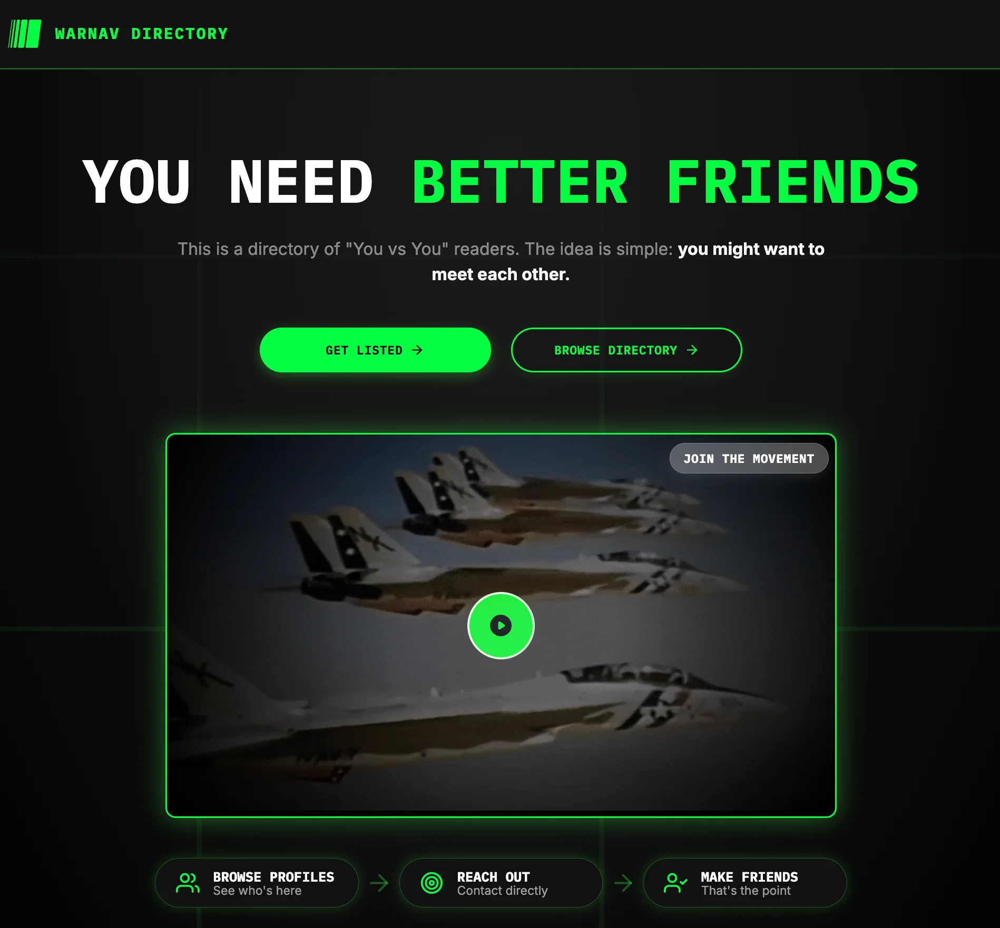

Blueprint Program, Every Book Ever For Free, Warnav Directory, and More
New: The Warnav Directory
Going forward, anyone who subscribes to the You vs You newsletter will be given the option to make a profile on the Warnav Directory.
I figured some of you readers might want to know each other, so this is a place to find and connect with other people who share some interests and values. I'm super excited for this, and I think it'll be an awesome way to meet great people!
If you are still curious and want more information about what this is, visit the landing page here. If you want to view the actual directory, visit this page.
(If we know each other and I felt it was ok, I might have already added you to it.)

On Checking In...
I feel like I've grown up with only two career paths presented to me: 1) Do average work for an average company making an average wage and be content with that 2) Get rich at all costs and check out to an island or whatever lonely existence suits you.
Neither of these seem particularly desirable given the current state of the world and its constant, never-ending problems (but one is more appealing than the other). It's like you are either smart enough to escape your own individual problems or live struggling to make ends meet in a world that doesn't care about you or your well being. Ouch.
Here is a third, alternative viewpoint: Check in. Get involved. Build power with people, not just for yourself – develop skills and resources not as an exit strategy, but as leverage to actually fix the systems we're all living in. This is what real men do; this is honorable and admirable.
3 Cool Things
Exercise For Planning Your Future 🎯
Warnav Blueprint Program
This is a (free) adaptation of Jordan Peterson's Future Authoring exercise (paid). I've done this exercise once in 2022 and again this week. I find it quite helpful for getting a handle on where I want to go in life. Strongly recommend.
Reel on Minecraft ⛏️
Minecraft Is The Ultimate Personality Test
I thought this analogy that how you play Minecraft is also how you navigate life was interesting. As someone making plans *ahem, Blueprint Program*, it is helpful to remind ourselves that often we don't have a crystal clear view of the plan in advance – we might only have small, quiet feelings like some topic is particularly intriguing.
Every Single Book Ever For Free 📚
Anna’s Archive
If it will get you to read more... you can find literally any ebook ever written for free on this site. What is your excuse now?
Grow Your Network
Fared Farag
linkedin.com/in/fared-farag/
Fared is a Machine Learning Engineer at Avalo in Raleigh, NC. We met many years ago at Astate after he presented his thesis work at an ACM event. He is super sharp and really enjoys his work. I have no doubt he will continue to perform really well in his field. He'd love to chat with you.